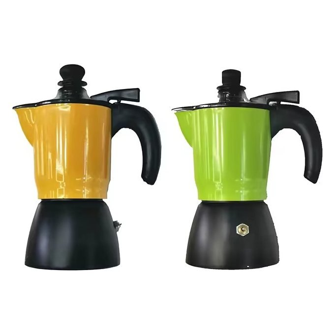

Start / Haushalt & Küche / Elektrischer Wasserkocher 1,7 l, Edelstahl, Abschaltautomatik und Kochtrockenschutz

Haushalt & Küche
Elektrischer Wasserkocher 1,7 l, Edelstahl, Abschaltautomatik und Kochtrockenschutz
1,7-Liter-Wasserkocher aus Edelstahl mit Abschalt- und Trockengehschutz für den Haushalt.
Der kabellose Wasserkocher fasst 1,7 Liter und bringt Wasser mit hoher Leistung schnell zum Kochen. Anspruchsvolle Käufer erwarten CE-Konformität (Niederspannung, EMV), RoHS, eine ElektroG-Registrierung und Lebensmittelkonformität des Wasserwegs sowie eine deutsche Anleitung.
Technische Daten
| Fassungsvermögen | 1,7 l |
|---|---|
| Sicherheit | Abschaltautomatik und Kochtrockenschutz |
| Zolltarifnummer (HS) | 85161080 |
EU-Normen und Vorschriften
LVD 2014/35/EU, EN 60335-2-15Niederspannung: Geräte zum Erwärmen von FlüssigkeitenEMV 2014/30/EUElektromagnetische VerträglichkeitRoHS 2011/65/EUBeschränkung gefährlicher Stoffe in ElektrogerätenElektroG / WEEERegistrierung bei der stiftung ear, RücknahmepflichtVO (EG) 1935/2004 / LFGBLebensmittelkontakt des WasserwegsGPSR (EU) 2023/988Allgemeine Produktsicherheit, EU-Verantwortlicher Pflicht
Passt dazu
Instantnudeln Rindfleisch-Geschmack (Beutel, ca. 105 g)Beutel-Instantnudeln mit Rindfleisch-Würze als schnelle, warme Mahlzeit für die Baustelle, nur Heißwasser nötig.
Instantkaffee 3-in-1 (Stick- bzw. Beutelware)Löslicher Kaffeemix aus Kaffee, Milchbestandteilen und Zucker für Pausenräume, Baustellen-Teeküchen und Kantinen.
Jasmin-Perltee 'Dragon Pearls' (handgerollter Grüntee, 100 g Dose/Beutel)Handgerollte Jasmin-Teeperlen aus jungen Knospen, mit Jasminblüten aromatisiert: die Premium-Stufe über dem losen Jasmin-Grüntee.
Weitere Produkte dieser Kategorie
Silikoneinsatz für Heißluftfritteuse (wiederverwendbar, rund, mit Trennsteg)Wiederverwendbarer, faltbarer Silikoneinsatz, der Backpapier in der Heißluftfritteuse ersetzt und den Korb sauber hält.
Vakuumiergerät mit Außenabsaugung (Folienschweißgerät, ca. 110–120 W, Trocken/Feucht)Kompaktes Vakuumiergerät für Beutel und Rollen mit Trocken-/Feucht-Programm für Frischhaltung, Meal-Prep und Einfrieren.
Mini-Folienschweißgerät / Tütenverschließer (akkubetrieben, USB-C, mit Schneidemesser)
Glas-Frischhaltedosen-Set (Borosilikat, Deckel luftdicht, ofen- und mikrowellengeeignet)Stapelbare Borosilikatglas-Behälter mit luftdichtem Deckel für Kühlschrank, Mikrowelle, Ofen und Gefrierfach.
Digitale Küchenwaage (5 kg / 1 g, Edelstahl oder Bambus, USB-C)Flache Küchenwaage bis 5 kg mit 1-g-Teilung, großem LCD und Abschaltautomatik – klein, leicht und ideal als Beipack.
Küchenmesser-Set mit Holzblock, 7-teilig, EdelstahlSiebenteiliges Messerset mit Holzblock und rostfreien Edelstahlklingen für den Haushalt.
Bratpfanne 28 cm, Aluminium, Keramik-Antihaftbeschichtung, induktionsgeeignetLeichte Aluminiumpfanne mit keramischer Antihaftbeschichtung und Induktionsboden.
Akku-Handstaubsauger 18 V, kabellos, bürstenloser Motor
Wäscheständer, Stahl, klappbar, pulverbeschichtetKlappbarer Wäscheständer aus pulverbeschichtetem Stahl für die Trocknung in der Wohnung.
Gusseisen-Topf emailliert 2,7 l (Bräter)Gusseisen-Topf emailliert 2,7 l (Bräter) - Standardware für den Haushaltsbedarf.

Brotmesser Edelstahl, Wellenschliff 25 cmBrotmesser Edelstahl, Wellenschliff 25 cm - Standardware für den Haushaltsbedarf.

Elektrischer Reiskocher 1,8 lElektrischer Reiskocher 1,8 l - Standardware für den Haushaltsbedarf.

Espressokocher (Moka-Kanne) Aluminium, 3 TassenEspressokocher (Moka-Kanne) Aluminium, 3 Tassen - Standardware für den Haushaltsbedarf.
Schubladeneinsatz Bambus für Besteck und UtensilienSchubladeneinsatz Bambus für Besteck und Utensilien - Standardware für den Haushaltsbedarf.
Bento-Box Edelstahl 304 mit FächernBento-Box Edelstahl 304 mit Fächern - Standardware für den Haushaltsbedarf.

Gewürzregal Metall, 2 Ebenen, ArbeitsplatteGewürzregal Metall, 2 Ebenen, Arbeitsplatte - Standardware für den Haushaltsbedarf.

Suppenkelle Edelstahl 304Suppenkelle Edelstahl 304 - Standardware für den Haushaltsbedarf.